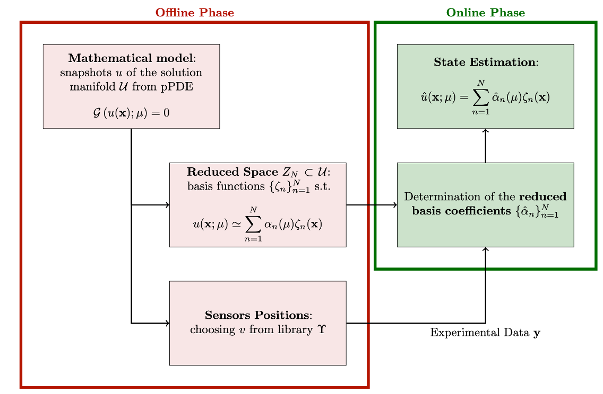

Reduced Order Modelling for OpenFoam (ROM4FOAM)
Contents
Reduced Order Modelling for OpenFoam (ROM4FOAM)#
Authors: Stefano Riva and Dr. Carolina Introini
This book collects some documentation and tutorials for the ROM4FOAM library built in OpenFOAM-v6, including a brief theoretical background of the theory of Reduced Order Modelling. This library is part of the Reduced Order multi-phySics data-drivEn (ROSE) framework. This work has been carried out at the Nuclear Reactors Group at Politecnico di Milano, under the supervision of Dr. Stefano Lorenzi and Prof. Antonio Cammi.
{kind=link}
How to cite ROM4FOAM#
If you are going to use ROM4FOAM in your research work, please cite the following articles:
C. Introini, S. Cavalleri, S. Lorenzi, S. Riva, and A. Cammi, “Stabilization of Generalized Empirical Interpolation Method (GEIM) in presence of noise: A novel approach based on Tikhonov regularization,” Computer Methods in Applied Mechanics and Engineering, vol. 404, p. 115773, 2023, doi: 10.1016/j.cma.2022.115773.
C. Introini, S. Riva, S. Lorenzi, S. Cavalleri, and A. Cammi, “Non-intrusive system state reconstruction from indirect measurements: A novel approach based on hybrid data assimilation methods,” Annals of Nuclear Energy, vol. 182, p. 109538, 2023, doi: 10.1016/j.anucene.2022.109538.
S. Riva, C. Introini, S. Lorenzi, and A. Cammi, “Hybrid data assimilation methods, Part I: Numerical comparison between GEIM and PBDW,” Annals of Nuclear Energy, vol. 190, p. 109864, 2023, https://doi.org/10.1016/j.anucene.2023.109864.
S. Riva, C. Introini, S. Lorenzi, and A. Cammi, “Hybrid data assimilation methods, Part II: Application to the DYNASTY experimental facility”, Annals of Nuclear Energy, vol. 190, p. 109863, 2023. doi: https://doi.org/10.1016/j.anucene.2023.109864.
What is Reduced Order Modelling?#
Reduced Order Modelling (ROM) [4, 16, 17] refers to any approach aimed to replace a High-Fidelity (HF) or Full Order (FOM) mathematical model with one, featuring a much lower complexity whilst keeping a desired level of accuracy. This set of techniques, developed originally for control theory, aims to study a dynamical system while preserving its input-output behaviour as much as possible. As the name suggests, ROM tries to reduce the dimension of the model to perform faster simulations while ensuring the preservation of the essential features of the physical phenomena. This set of methods can be used in different applications, especially in multi-query or real-time scenarios, e.g. optimization, uncertainty quantification and inverse problems [6, 7].
Reduced Basis Methods#
Among all ROM methods, Reduced Basis (RB) [5, 8, 18] are a well-established and widely used class of ROM techniques, which are based on an offline-online paradigm. In the offline stage, a set of RB functions \(\{\phi_n(\mathbf{x})\}_{n=1}^N\) are derived from an ensemble of high-fidelity solutions, called snapshots, yielding a low dimensional space that retains the main features of the full-order model. Different approaches can be used to construct the reduced basis, such as the greedy algorithms [13] and the POD [2]. Regardless of the construction strategy, an approximation of the high-fidelity solution is sought during the online stage as a linear combination of the RB functions, i.e.
According to the methodology for calculating the expansion coefficients \(\alpha_n(\mu)\) (also called reduced/modal coefficients) of the approximation, RB methods are classified into two categories: intrusive and non-intrusive RB methods.
Intrusive: the governing equations of the physical system, to which the snapshots are solution, must be known and used during the online step. From a set of PDEs a rather small system of ODEs is derived, typically using a Galerkin projection.
Non-Intrusive: the governing equations knowledge is not required, a more data-driven approach is followed.
This project mainly focuses on the latter since they can be easier extended to the combination of real data with a priori knowledge of the mathematical models.
Hybrid Data Assimilation techniques#
With Hybrid Data Assimilation (HDA) the authors refer to a set of techniques, which combines theoretical modelling with real data collecting from a physical system.
In particular, ROM is seen in a Data Assimilation (DA) framework [3], so that the theoretical prediction, approximated by ROM, is corrected or updated by experimental evaluations of some fields (e.g., the measure of the temperature in a pipe or the neutron flux in a nuclear reactor).
The general structure of the HDA methods is reported in the figure below [19], the methods implemented in this repository can also help in finding the best locations for experimental sensors.
{kind=link}